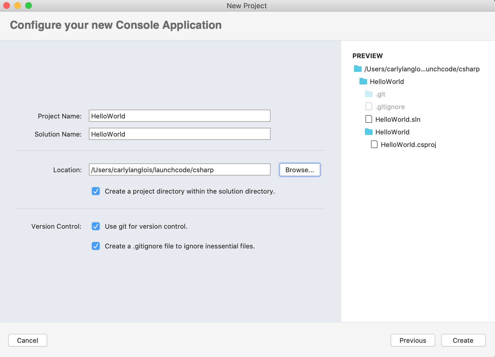
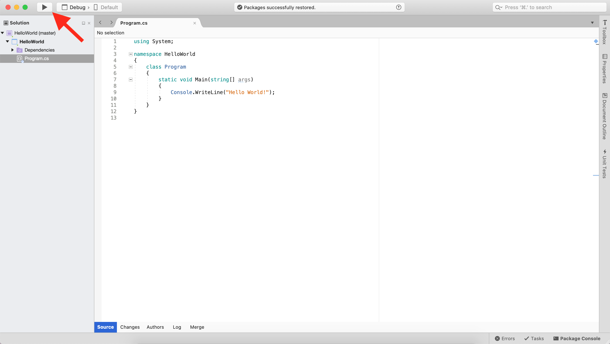

1.5. Creating a C# Project
Following the “Hello World” trend, let’s create a new Visual Studio project.
Create a new folder to hold your C# practice files. Since you will be creating lots of small projects as you move through this course, we suggest that you also add sub-folders with names corresponding to the related chapters and projects. Something like
csharp-practice/chapter-name/project-name.In Visual Studio, from the project opener window, select the option to create a new Visual Studio project.
You next need to choose what project template to use. For this first project (and those in the next several lessons), select the .NET Core Console Application option for C#.
Mac Users:
MAC: Visual Studio console application template selection.
Windows Users:

WINDOWS: Visual Studio console application template selection.
Then, give your new project a name. Following C# Naming Conventions, call your project
HelloWorld. The solution name will be the same. Choose where you want this project to be saved, ideally somewhere inside the directory you created in Step 1 of this tutorial.Mac Users:
Pick the option to use Git for version control.
MAC: Name a new Visual Studio project.
Windows Users:

WINDOWS: Name a new Visual Studio project.
Once created, Visual Studio opens a new project window.
Mac Users:
You’ll see the project file tree on the left and a file called
Program.cs.MAC: A new Visual Studio project with run button indicated.
Windows Users:
You’ll see the project file tree containing a file called
Program.csin a pane called Solution Explorer.WINDOWS: A new Visual Studio project with run button indicated.
You are new to C# and we’ll go over the syntax present in
Program.csin time. For now, can you guess what line 9 accomplishes?1using System; 2 3namespace HelloWorld 4{ 5 class Program 6 { 7 static void Main(string[] args) 8 { 9 Console.WriteLine("Hello World!"); 10 } 11 } 12}
Click on the triangle button indicated in one of the images above to run the project and see the output.
A console window should pop up with the line “Hello World” printed. That’s it. You have created and executed your first C# application.
Tip
The first time you run a console app in Visual Studio, you may be prompted to allow VS to access the terminal. This is ok.
This may also take longer than a few seconds to run the very first time.
1.5.1. Hello, Solution!
You’ve just created your first C# project. Congrats! In fact, you’ve also just created your own C# solution.
Your HelloWorld project is nested within a solution called HelloWorld. A solution behaves like a container for
related projects and other Visual Studio settings.
A C# project contains all the code to run a particular application. Along with the Program.cs file you ran just a
moment ago, you may have also noticed a Dependencies folder. Many applications require extra code like dependencies
or other compiling configurations to execute.
You can create another project inside of the HelloWorld solution
very easily. Right click on the solution name to add a new project,
another console app as above, and name it Hello<YourName>.
Change the starter code in Program.cs to greet you by name.
Now that you have more than one project in your solution, you need to select which one you want to run. Select the project name from the menu next to the Run button.
1.5.2. Check Your Understanding
Question
Given the code below, which line is responsible for printing a message?
1class HelloWorld
2{
3 static void Main(string[] args)
4 {
5 Console.WriteLine("Hello C# Students");
6 }
7}
Line 1
Line 3
Line 5
None of the above
Question
In the sourcecode, which line is responsible for defining the class?
1class HelloWorld
2{
3 static void Main(string[] args)
4 {
5 Console.WriteLine("Hello C# Students");
6 }
7}
line 1
line 3
line 5
None of the above